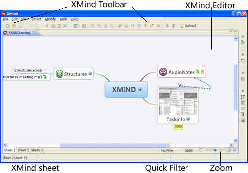

This glossary is provided for your information only; it is not meant to be relied upon as a complete or authoritative description of the terms defined below or of the privacy and/or security ramifications of the technologies described.

- XMind Toolbar: This is a group icons which represent different commands.
- XMind Editor: It is the space where users can design map.
- Mini-toolbar: Mini-toolbar is under the bottom of editor. you can Switch Sheets, Quick Filter, and Zoom the map here easily.
- View: View plays an important role in XMind. There are 11 different views. View is used to format the map, simplify to usage, and enhance the efficiency. Every view has the view toolbar. View can be easily moved and positioned to any place by dragging and moving, even out of XMind and on your desktop.
- Workbook and Sheets: Every XMind file is a workbook, which can have multiple sheets. Every sheet is a separated map.
- Topic: Topic is the basic element in the map. Usually, it is written down the keywords to track our thought.
- Xmind ID: XMind ID is the ID used to sign in your account on xmind.net.
- XMind 3: XMind 3 is an open source software.
- XMind Pro 3: XMind Pro 3 is a commercial software. It should be subscribed to use.
- XMind Share: XMind Share is a web service, which is to let users share the mind maps online.
You may also be interested in...